Création d'un site web pour l'IUT de Lens
Ce premier projet tutoré a pour but de nous apprendre à travailler en équipe et à améliorer nos compétences en webdesign et développement front-end.
Ce projet a été réalisé en équipe de 3 personnes. L’objectif de ce projet est de faire un relooking du portail des IUT Informatiques.Le portail des IUT Informatiques est un site qui permet aux lycéens, étudiants, parents et professeurs de se renseigner sur la formation que propose le DUT informatique.Notre travail a donc été de créer une nouvelle charte graphique et éditoriale pour améliorer le design, de trouver de nouvelles images et de nouveaux logos et également de faire une version responsive.
Avant :
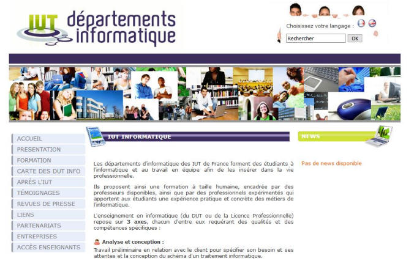
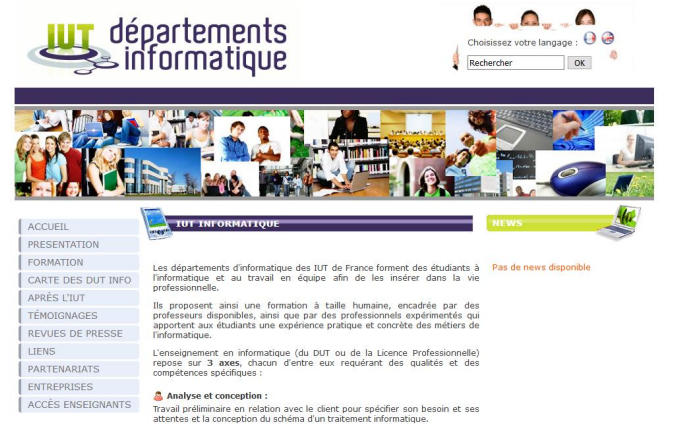
Après :

Jeu "Labyrinthe"
Pour commencer, le but de ce projet a été de réaliser le jeu de plateau labyrinthe. Ce jeu est réalisé par l'édition Ravensburger, notre objectif : le réaliser sous forme numérique.
Ce projet a été réalisé en équipe de 3 personnes. Afin de réaliser ce projet nous disposions de certaines consignes afin de le réaliser dans de bonnes conditions. Tout d'abord nous devions utiliser le langage JAVA pour coder ce jeu, plus précisément la librairie graphique SWING pour la l'interface graphique.
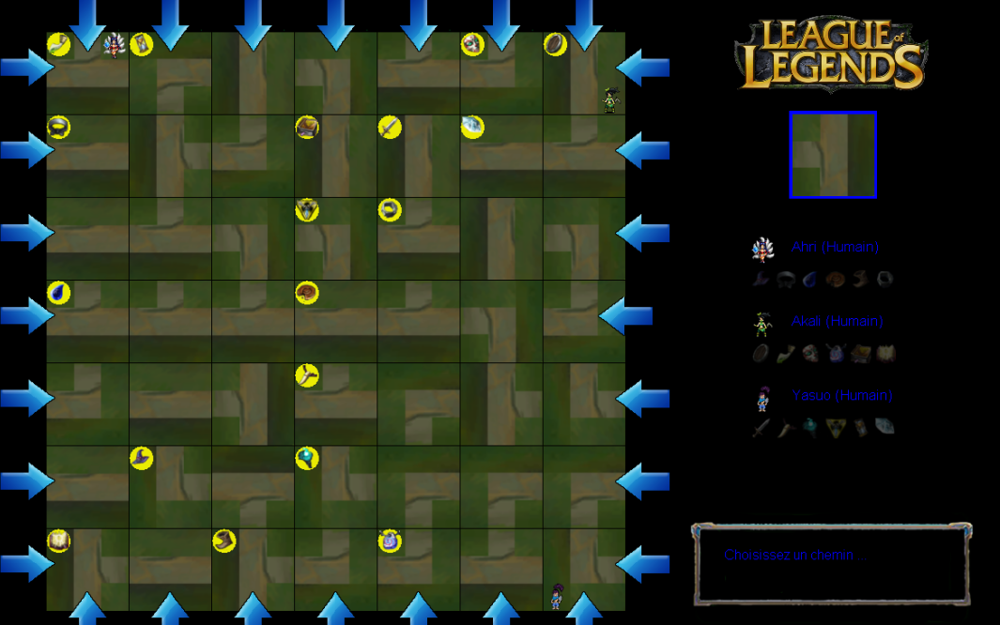Marathon du WEB
Le but de ce projet a été de réaliser un site WEB type allociné en seulement 48h.
Ce projet a été réalisé en équipe de 7 personnes composé de 3 développeurs Back, 2 développeurs front, un graphiste et une rédactrice / responsable audiovisuel. Pour ma part, je faisais partie de l'équipe de développeurs back.
Voici différentes pages que nous avons réalisées :
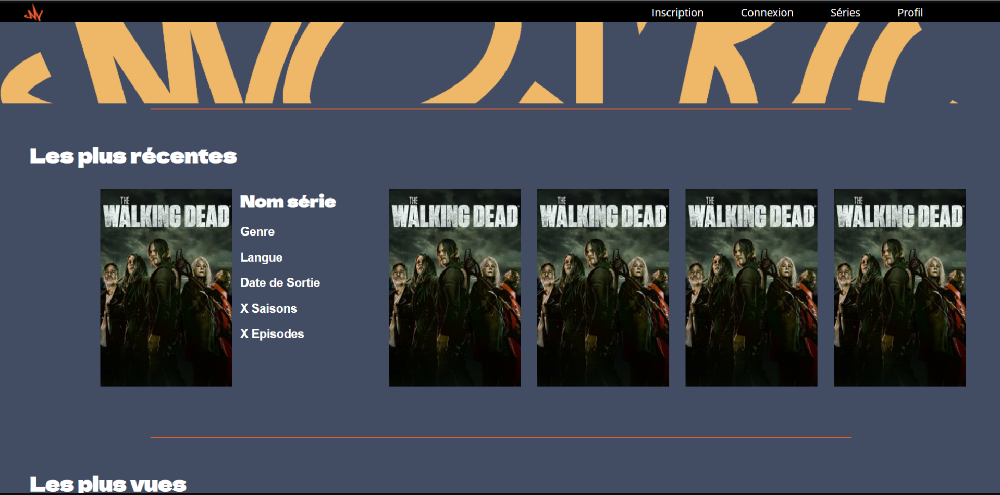 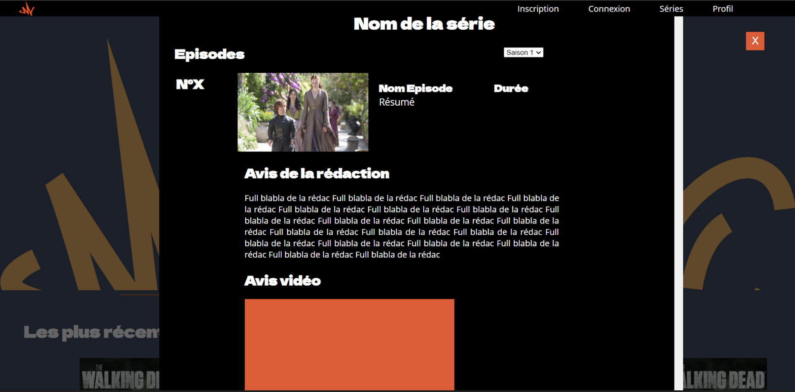 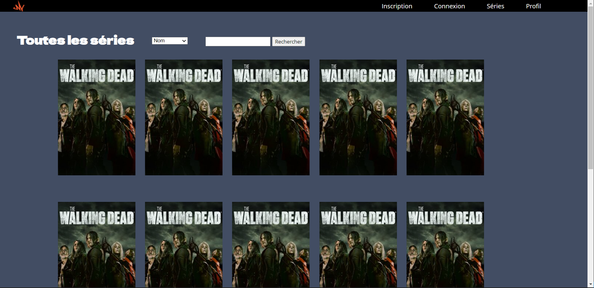
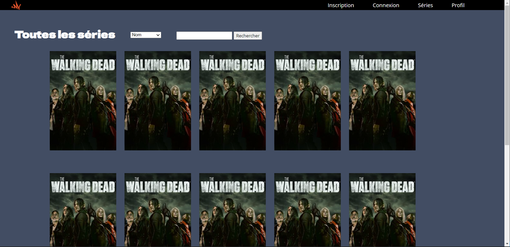
Agil'IT
Le but de ce projet a été de réaliser un site WEB de type QUIZ avec comme thème Burger QUIZ en utilisant la méthode de travail Agile.
Ce projet a été réaliser en équipe de 6 personnes avec des développeurs front et back. Pour ma part j'ai fais partis de l'équipe de développeurs back.
Voici différentes pâges que nous avons réalisées :
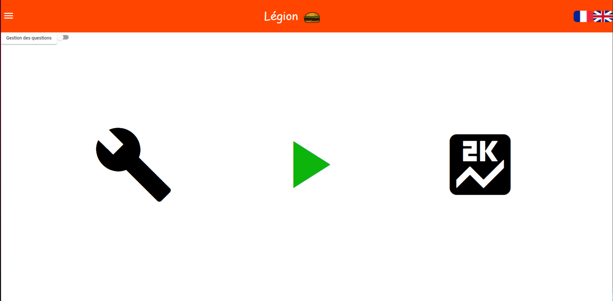 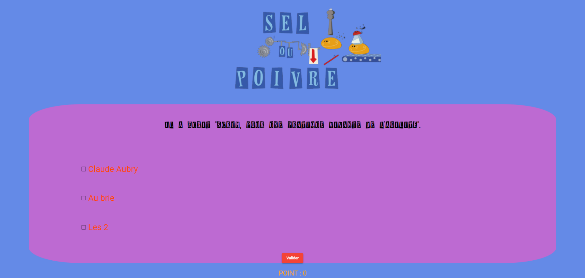 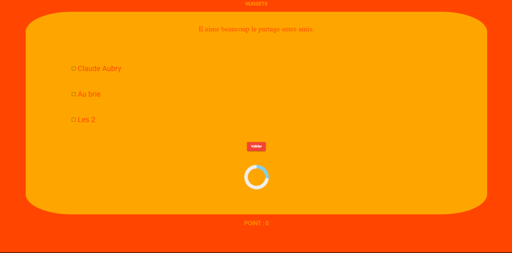 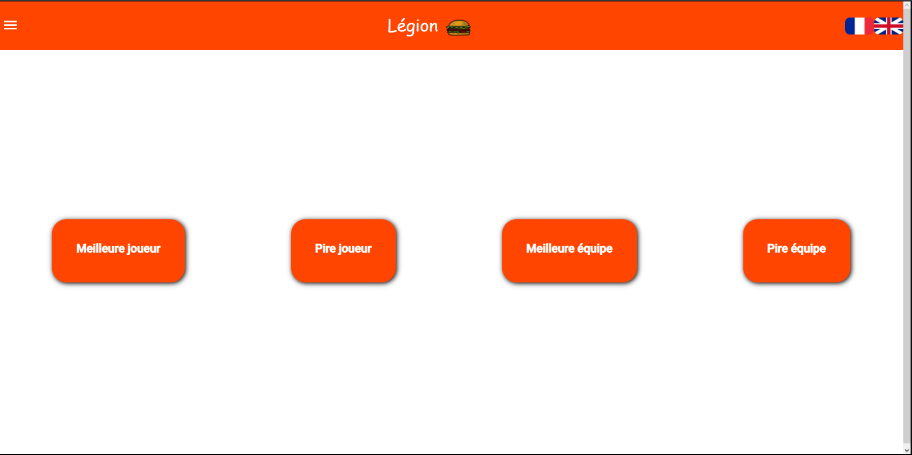